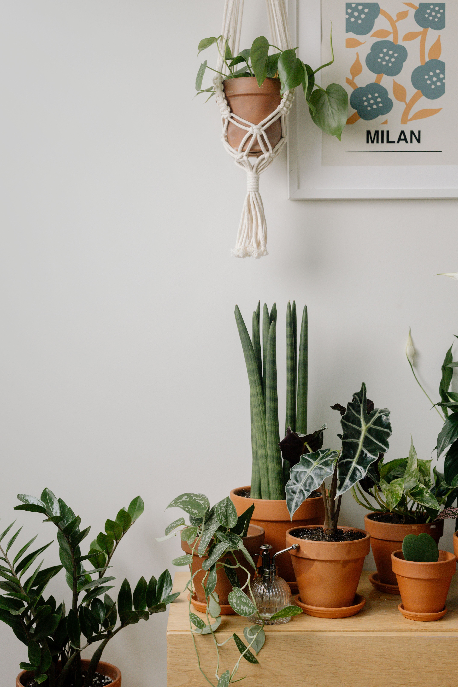
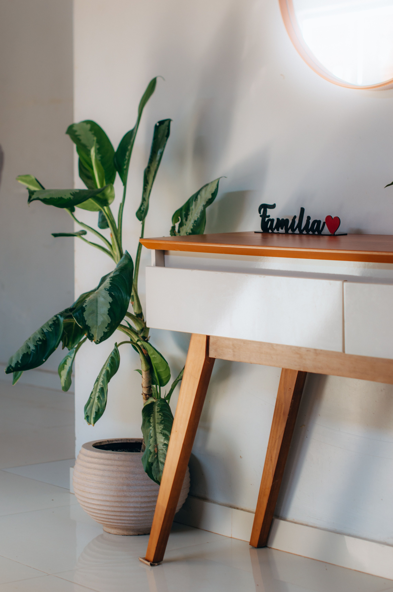
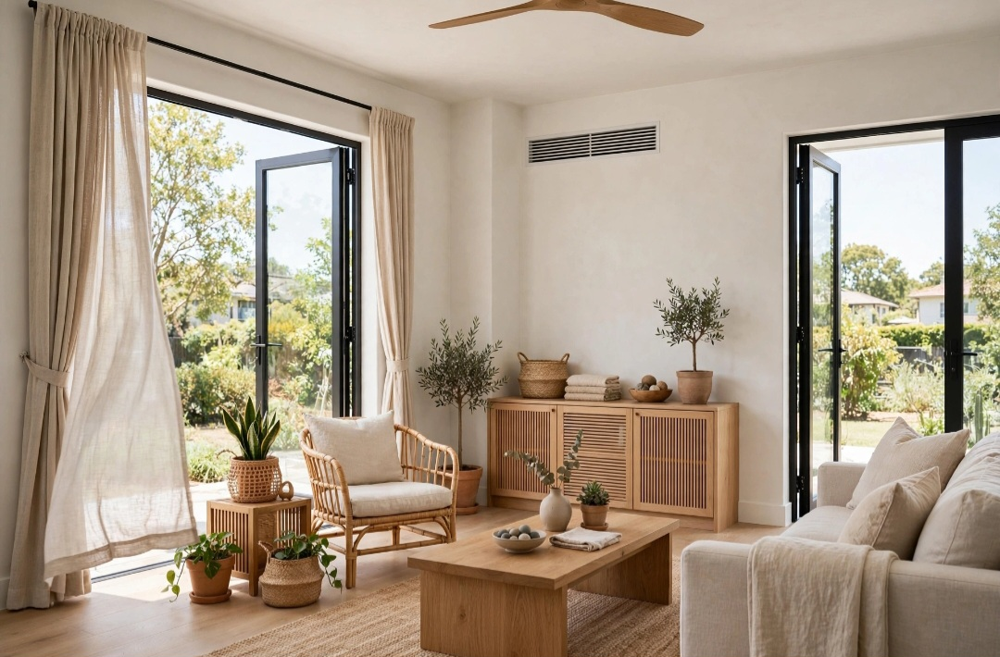

En este artículo
Introducción
Elegir una alfombra implica mucho más que escoger un estampado. El tamaño, el material, la facilidad de limpieza, el tránsito y la relación con los muebles determinan si la pieza mejora realmente el confort y la decoración.
Antes de realizar cambios, conviene observar las condiciones reales, medir y definir qué quieres mejorar. Una planificación sencilla evita compras impulsivas y permite que cada elemento tenga una función clara.
Elegir las medidas correctas
Mide la habitación y la disposición de los muebles antes de comprar. En el salón, una alfombra demasiado pequeña puede hacer que sofá y sillones parezcan desconectados. Según el espacio, puede funcionar con las patas delanteras de los asientos sobre ella o con todo el conjunto dentro.
En el comedor, la alfombra debe permitir mover las sillas sin que las patas traseras salgan continuamente del borde. Mide la mesa y añade margen suficiente alrededor. Una pieza bonita pero pequeña se convertirá en una molestia diaria.
En el dormitorio, puedes colocar una alfombra grande bajo la cama o utilizar corredores laterales. El objetivo es aportar confort donde se pisa y mantener proporción con el volumen de la cama.
Marca las medidas con cinta de pintor antes de comprar. Ver el contorno real en el suelo evita errores que las fotografías de catálogo no muestran.
Antes de tomar una decisión definitiva, trabaja por etapas. Primero resuelve la función y después la estética. Esta secuencia reduce compras impulsivas y permite detectar si un problema de decoración era en realidad un problema de circulación, escala o almacenamiento.
Haz fotografías durante el proceso. La cámara simplifica la escena y ayuda a detectar desequilibrios. También conviene observar el espacio por la mañana y por la noche, porque la luz puede cambiar por completo la percepción de colores y volúmenes.
Adaptar la alfombra al uso de la habitación
El uso determina resistencia. Una entrada necesita una alfombra que soporte suciedad y tránsito; un dormitorio admite opciones más suaves. En hogares con niños o mascotas, la facilidad de aspirado y limpieza puede ser más importante que una textura delicada.
En zonas de comedor, considera derrames. Una alfombra de pelo muy largo puede retener migas y complicar la limpieza. En pasillos, perfiles demasiado altos pueden interferir con puertas o aumentar riesgo de tropiezo.
Para zonas húmedas, comprueba que el material sea apropiado. No todas las alfombras toleran humedad y una pieza que permanece mojada puede deteriorarse.
Piensa también en la frecuencia con que estás dispuesto a limpiar. La mejor elección es aquella que puedes mantener correctamente durante años.

El presupuesto debe definirse antes de comprar. Prioriza las piezas que afectan al uso diario y deja los accesorios para el final. Una solución adecuada y duradera suele aportar más valor que varias compras pequeñas realizadas sin planificación.
Reutilizar elementos existentes también forma parte del diseño. Mover, limpiar, reparar o dar una función diferente a una pieza puede resolver una necesidad sin aumentar la cantidad de objetos en casa o jardín.
Materiales, textura y mantenimiento
Lana, algodón, fibras vegetales y materiales sintéticos ofrecen comportamientos diferentes. La lana suele aportar calidez y durabilidad, pero requiere cuidados apropiados. El algodón puede ser más ligero y algunas piezas permiten lavado, según etiqueta.
Yute y sisal aportan textura natural, aunque su respuesta a humedad y manchas debe considerarse. Las fibras sintéticas varían en calidad y pueden ofrecer resistencia o facilidad de mantenimiento.
No elijas únicamente por el nombre del material. Revisa construcción, densidad, respaldo y recomendaciones del fabricante. Dos alfombras de la misma fibra pueden comportarse de manera distinta.
Utiliza una base antideslizante cuando corresponda. Además de mejorar seguridad, puede ayudar a mantener la alfombra estable y proteger ciertos suelos, siempre que sea compatible con el acabado.
El mantenimiento futuro merece atención desde el principio. Materiales delicados o soluciones difíciles de limpiar pueden resultar atractivos en una imagen y poco prácticos en la vida diaria. Revisa instrucciones de cuidado y piensa en clima, mascotas, niños y frecuencia de uso.
La seguridad tampoco debe sacrificarse por estética. Fijaciones, estabilidad, superficies antideslizantes, cargas y recorridos deben resolverse correctamente. Cuando una instalación supera un cambio decorativo sencillo, busca asesoramiento profesional.
Color, diseño y relación con los muebles
La alfombra puede unir los colores de una habitación o introducir contraste. Si sofá, cortinas y paredes ya tienen patrones fuertes, una alfombra más tranquila puede equilibrar. En un ambiente neutro, un diseño protagonista puede aportar identidad.
Observa la muestra con la luz real. Los colores cambian según iluminación natural y artificial. Si compras online, revisa políticas de devolución porque la pantalla no reproduce siempre tonos y textura con precisión.
La forma también importa. Rectangulares son versátiles; redondas pueden acompañar mesas circulares o definir rincones; corredores funcionan en pasillos. La forma debe responder a la arquitectura y a los muebles.
No necesitas combinar exactamente todos los colores. Repetir uno o dos tonos del ambiente es suficiente para crear relación sin que el conjunto parezca demasiado coordinado.

Deja espacio para que el ambiente evolucione. No es necesario completar todos los rincones de inmediato. Vivir con la nueva distribución durante unos días permite descubrir qué falta realmente y qué huecos conviene mantener libres.
Una revisión cada pocos meses ayuda a retirar lo que ya no funciona. Los espacios agradables no dependen de acumular, sino de conservar una relación clara entre utilidad, proporción y personalidad.
Plan práctico para aplicar estas ideas
Aplicar los cambios de forma gradual permite controlar mejor el resultado. Haz una lista de prioridades, empieza por aquello que afecta a la comodidad y comprueba el efecto antes de continuar. Cuando una solución ya funciona, no es necesario añadir más elementos.
También conviene establecer una rutina sencilla de mantenimiento. Dedicar unos minutos de forma periódica a limpiar, ordenar y revisar evita que pequeños problemas se acumulen. Un diseño duradero es aquel que puede mantenerse sin esfuerzo desproporcionado.
Si una decisión implica perforaciones importantes, cambios estructurales, electricidad, cargas elevadas o problemas de humedad, la opción prudente es consultar a un profesional cualificado. La decoración debe mejorar el espacio sin crear riesgos.
Revisión final antes de dar el trabajo por terminado
Cuando hayas aplicado los cambios principales, utiliza el espacio con normalidad durante varios días. Observa recorridos, limpieza, comodidad y mantenimiento. Las decisiones que funcionan en una fotografía no siempre responden bien al uso diario, por eso esta prueba es importante.
Retira temporalmente cualquier elemento que genere dudas. Si el espacio funciona mejor sin él, probablemente no era necesario. Esta forma de editar ayuda a mantener proporción y evita que la decoración o el jardín se saturen con el paso del tiempo.
Por último, anota qué materiales, medidas o cuidados has utilizado. Esta información será útil cuando necesites reemplazar una pieza, realizar mantenimiento o ampliar el proyecto en el futuro.
Revisión final antes de dar el trabajo por terminado
Cuando hayas aplicado los cambios principales, utiliza el espacio con normalidad durante varios días. Observa recorridos, limpieza, comodidad y mantenimiento. Las decisiones que funcionan en una fotografía no siempre responden bien al uso diario, por eso esta prueba es importante.
Retira temporalmente cualquier elemento que genere dudas. Si el espacio funciona mejor sin él, probablemente no era necesario. Esta forma de editar ayuda a mantener proporción y evita que la decoración o el jardín se saturen con el paso del tiempo.
Por último, anota qué materiales, medidas o cuidados has utilizado. Esta información será útil cuando necesites reemplazar una pieza, realizar mantenimiento o ampliar el proyecto en el futuro.
Revisión final antes de dar el trabajo por terminado
Cuando hayas aplicado los cambios principales, utiliza el espacio con normalidad durante varios días. Observa recorridos, limpieza, comodidad y mantenimiento. Las decisiones que funcionan en una fotografía no siempre responden bien al uso diario, por eso esta prueba es importante.

Retira temporalmente cualquier elemento que genere dudas. Si el espacio funciona mejor sin él, probablemente no era necesario. Esta forma de editar ayuda a mantener proporción y evita que la decoración o el jardín se saturen con el paso del tiempo.
Por último, anota qué materiales, medidas o cuidados has utilizado. Esta información será útil cuando necesites reemplazar una pieza, realizar mantenimiento o ampliar el proyecto en el futuro.
Revisión final antes de dar el trabajo por terminado
Cuando hayas aplicado los cambios principales, utiliza el espacio con normalidad durante varios días. Observa recorridos, limpieza, comodidad y mantenimiento. Las decisiones que funcionan en una fotografía no siempre responden bien al uso diario, por eso esta prueba es importante.
Retira temporalmente cualquier elemento que genere dudas. Si el espacio funciona mejor sin él, probablemente no era necesario. Esta forma de editar ayuda a mantener proporción y evita que la decoración o el jardín se saturen con el paso del tiempo.
Por último, anota qué materiales, medidas o cuidados has utilizado. Esta información será útil cuando necesites reemplazar una pieza, realizar mantenimiento o ampliar el proyecto en el futuro.
Revisión final antes de dar el trabajo por terminado
Cuando hayas aplicado los cambios principales, utiliza el espacio con normalidad durante varios días. Observa recorridos, limpieza, comodidad y mantenimiento. Las decisiones que funcionan en una fotografía no siempre responden bien al uso diario, por eso esta prueba es importante.
Retira temporalmente cualquier elemento que genere dudas. Si el espacio funciona mejor sin él, probablemente no era necesario. Esta forma de editar ayuda a mantener proporción y evita que la decoración o el jardín se saturen con el paso del tiempo.
Por último, anota qué materiales, medidas o cuidados has utilizado. Esta información será útil cuando necesites reemplazar una pieza, realizar mantenimiento o ampliar el proyecto en el futuro.
Revisión final antes de dar el trabajo por terminado
Cuando hayas aplicado los cambios principales, utiliza el espacio con normalidad durante varios días. Observa recorridos, limpieza, comodidad y mantenimiento. Las decisiones que funcionan en una fotografía no siempre responden bien al uso diario, por eso esta prueba es importante.
Retira temporalmente cualquier elemento que genere dudas. Si el espacio funciona mejor sin él, probablemente no era necesario. Esta forma de editar ayuda a mantener proporción y evita que la decoración o el jardín se saturen con el paso del tiempo.
Por último, anota qué materiales, medidas o cuidados has utilizado. Esta información será útil cuando necesites reemplazar una pieza, realizar mantenimiento o ampliar el proyecto en el futuro.
Preguntas frecuentes
¿Cuál es la mejor manera de empezar?
Empieza midiendo y observando el espacio antes de comprar. En cómo elegir alfombras para casa según cada espacio, la planificación permite tomar decisiones proporcionadas y evitar cambios innecesarios.
¿Cuánto tiempo se necesita para ver resultados?
Los primeros cambios pueden apreciarse de inmediato, pero conviene probar la distribución y los materiales durante varios días antes de considerar el resultado definitivo.
¿Qué errores deberían evitarse?
Evita comprar sin medir, saturar el espacio, ignorar el mantenimiento y elegir soluciones únicamente por tendencia sin considerar el uso cotidiano.
Conclusión
Cómo elegir alfombras para casa según cada espacio requiere combinar estética y función. Medir, observar, elegir materiales adecuados y avanzar por etapas permite conseguir un resultado más coherente, fácil de mantener y adaptado a la vida cotidiana.